ACES 2.0 uma porta para criação de looks para além dos LUTs tradicionais
A ideia inicial desse artigo foi bastante simples, testar o novo ACES 2.0 (The Academy Color Encoding System). Em paralelo fiz alguns trabalhos para a Canon, testando e produzindo materiais para sua última câmera de cinema, a Canon EOS C400. Assim decidi testar o novo ACES com as imagens da nova câmera. No entanto, ao fazer isso me deparo com questões mais importantes do que as meramente técnicas sobre a atualização de um sistema de codificação de cores. O que me aparece nesse caminho é uma possibilidade clara de poder criar características que imagino para meus projetos de uma maneira ao mesmo tempo mais experimental e com resultados mais uniformes e assertivos.
Há alguns anos venho trabalhando nas versões mais antigas do ACES, agora sua atualização promete corrigir algumas questões com a reprodução da cores e deve solidificar e popularizar esses fluxos para uma gama maior de aplicações. Até a sua versão anterior, a 1.3, havia uma questão pra mim no resultado direto da imagem produzida pelo ACES, somente com a transformação simples, me parecia muito contrastada e com tons de pele menos agradáveis do que as transformações de espaço de cor feitas por outros processos. Assim, quando os processos me exigiam o uso do ACES por algum motivo - o uso de mais de um tipo de câmera, composições com elementos criados por computação gráfica (CGI) e intervenções de efeitos especiais (VFX) dos mais diversos - sempre me impôs uma pesquisa mais intensa para alcançar um resultado que teria um atalho caso eu optasse pelas transformações nativas do Davinci Resolve ou mesmo o LUT disponibilizado pelo fabricante. E mesmo apesar de gostar muito desses processos de teste, não é sempre que encontro formas de alcançar resultados uniformes, como no caso de testes para escolha de lentes ou filtros, que me dão determinadas características na imagem que estarão sempre lá ao usar aquela ótica.
A escolha de um método de gerenciamento de cores, longe de ser um processo homogêneo e automático, impacta de maneiras diferentes o resultado final da imagem. No caminho entre a visualização da ideia que temos para a imagem final podemos fazer testes com o colorista, criar um ou mais show-LUTs (com a intenção criativa pesquisada); nos trabalhos que podemos colaborar com o DIT, podemos testar manipulações no sinal no set e depois temos todo o trabalho de colorização do material na etapa de pós-produção. Nos processos analógicos testamos diferentes tipos de negativos e formas de processamento e manipulação fotoquímica e seguindo os processos testados (e confiando na precisão do laboratório) o resultado final da imagem na tela do cinema é mais ou menos seguro - quase como na escolha da ótica. Nos processos digitais os "looks” criados na pré-produção sempre me pareceram bastante limitados e dependentes de muitos ajustes para funcionar, e o mais seguro, no final das contas é acabar por ficar com a ciência de cor do fabricante, que irá garantir ao menos uniformidade das escolhas na maior parte das situações fotográficas. Assim, a primeira impressão que se poderia ter, seguindo esse raciocínio, é a de que o que mais se aproxima do processo analógico é a escolha da câmera (com as cores desse ou daquele fabricante). O estudo dos processos digitais me permitiu entender que a câmera escolhida não precisa ser o principal ponto das escolhas das características da imagem. Ao contrário disso, feito um processo competente de gerenciamento de cores, as diferenças entre câmeras tem mais a ver com processos práticos na captação, como ter melhor ergonomia pro, ou oferecer maior intervalo dinâmico para a exposição, mas não tem um grande peso no resultado final. Muito difícil hoje em dia que alguém possa adivinhar a câmera usada num projeto já colorizado.
Gosto quando vejo os processos de pesquisa de construção da imagem como os de Steven Yedlin, como em seu artigo “On color science” onde ele se questiona:
“Como cineastas, será que podemos identificar, isolar e compreender qualquer desses atributos implícitos [a uma imagem] de modo que possamos manipulá-los com intenção para nossos próprios fins, ou estaremos para sempre relegados à condição de consumidores, navegando entre soluções pré-empacotadas e ostentando o emblema de fidelidade à marca que escolhemos?”
Sua resposta é clara: “[...] a maior parte da aparência perceptiva da imagem provém da preparação matemática da imagem para exibição numa tela, e não do formato da câmera. Isso significa que, se conseguirmos identificar os atributos que nos interessam, podemos controlá-los e esculpi-los com precisão e de forma individual”. Seu artigo segue para comparações de atributos semelhantes aos que encontramos nas películas fotográficas, o que me interessa aqui mais como processo, onde ele encontra formas de manipular atributos da imagem com uniformidade e que possam ser usado de maneira consistente no set de filmagens (para além da ciência de cores da Arri da Red ou da Canon). Quando vejo os testes de Yedlin de resultados radicalmente diferentes a partir de diferentes formas de transformação técnica usada para "preparar” um mesmo fotograma escaneado, me deparo com uma experiência conhecida no mundo digital. Cada transformação técnica de espaço de cor leva a resultados bastante diferentes.
No caso do ACES, para além da flexibilidade de trabalho com diferentes equipamentos e processos, há uma possibilidade técnica que sempre me atraiu, que é a de poder atuar na imagem numa lógica fotométrica da cena propriamente dita, pois sua base cálculo atua numa lógica linear (como a lógica da interpretação da luz pelo sensor e por decodificação pelas telas). Um dos problemas dos LUTS é que ele atua em espaço intermediário de câmera como uma matriz, que substitui valores RGB de um ponto a outro, assim que dependendo da situação de luz e da saturação das cores, um Show-LUT feito numa dada situação, não irá responder exatamente ao intuito criativo pesquisado na pré-produção. Além disso, os LUTs não têm como levar em conta diferentes adaptações necessárias para diferentes tecnologias de tela - lembrando que vivemos num processo de mudança de tecnologias de tela, no qual convivem diferentes espaços de cor e curvas de luminância.
Apesar de tudo isso o ACES até sua versão anterior, a 1.3, tinha aquelas questões que já descrevi acima. Dessa forma, volto para o que me animou tanto nos testes do ACES 2.0, eles trabalharam num novo cálculo do seu “Rendering Transform”, o que fez com que dê, sem nenhuma manipulação um melhor ponto de partida, menos contrastado e com cores mais convincentes.
Para quem não conhece a lógica do ACES vale a pena um breve resumo do caminho das transformações que a imagem passa num fluxo “normal” e num baseado em ACES, desde a informação luminosa da cena até a imagem vista em determinada tela.
Entendendo as transformações e o ACES
Num fluxo mais simples, baseado em LUT de transformação temos o seguinte esquema:
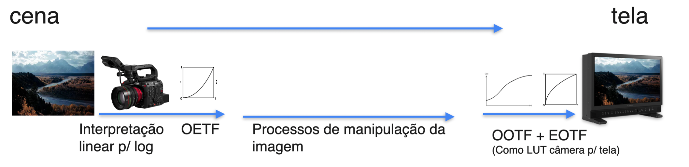
Onde:
- OETF: transformação ótico-elétrico - Câmera transforma a informação linear da cena em um espaço intermediário de trabalho, no nosso caso a Canon EOS C400 registra a informação em espaço Canon Cinema Gamut/Canon-log 2.
- EOTF: transformação eletro-ótico - volta de espaço intermediário para valores lineares de luz, agora numa tela em forma de um arquivo LUT de transformação. Nesse fluxo é necessário um LUT diferente para cada saída (cada tipo de tela - Rec709/1886, Rec2020/PQ, P3/PQ).
- OOTF: transformação ótico-ótico que adapta o cálculo de codificação de display para a percepção visual da luz na tela.
Há alguns problemas aqui.
- Esse fluxo ignora a conversa com outras câmeras e outros processos (VFX, CGI, virtual production), pois eles não teriam um espaço comum de trabalho fora do espaço de display.
- Assim ele pode induzir processos de manipulação feitos depois da transformação, já em espaço de tela (display), o que reduz bastante a flexibilidade do uso futuro do material em outra tecnologia de tela.
- As transformações para espaço de tela, ou display, tem uma questão, diferentes níveis de contraste de luz e cor são percebidos de maneira diferente, fazendo com que um LUT simples nem sempre seja a melhor ferramenta, dada a simplicidade da forma que sua matemática opera.
De maneira bastante simplificada teríamos:
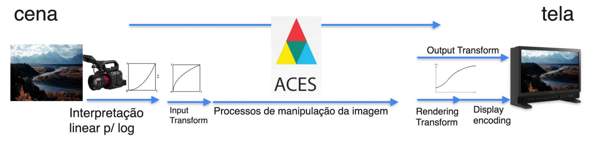
Onde:
- LOG para ACES - Ao invés da transformação OETF (ótico-elétrico) simples - saindo de valores lineares da cena para o espaço intermediário de câmera, no fluxo ACES acrescenta-se uma “input transform” - que passa de espaço “log” de câmera para ACES, que tem sua matemática em uma lógica linear de cena com primária mapeadas em um espaço de cor enorme, chamado de AP0.
- Nesse espaço podemos operar e fazer conversar diferentes processos da pipeline audiovisual.
- No final, ao invés da dupla OOTF + EOTF, temos um "rendering transform” + o "display encoding” que juntos são chamados de “Output Transform”, que adapta a lógica de cena para a percepção visual da luz na tela e encoda essa informação para um determinado espaço de cor de tela. Assim, o Rendering Transform é um dos cálculos mais importantes porque, ao contrário do OETF, OOTF e EOTF, não é uma matemática simples, envolve um cálculo de tone mapping, que leva em conta o volume de cores e de luz da cena adaptado a uma saída específica só no final do processo.
Ainda temos uma questão nesse fluxo, porque para a melhor resposta do ACES ele trabalha em lógica linear num espaço de mapeamento das cores muito grande, maior do que as cores visíveis, o AP0, esse espaço é conhecido como SMPTE ST 2065-1 ou ACES 2065-1, ou apenas espaço ACES. Por ser muito amplo ele dificultaria a operação prática nos softwares de manipulação e criação de imagens e o transporte de informação entre fluxos mais simples.
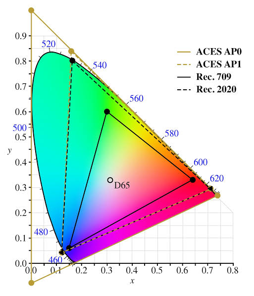
Assim foi criado o espaço de cores AP1, de tamanho semelhante ao Rec 2020 e a curva cct, semelhante a uma curva log de câmera, para trabalho de manipulação de cor (como no Davinci Resolve). Nos fluxos de VFX e CGI é usado o ACES CG, espaço AP1 mantendo o cálculo linear de luminância.
Temos então um esquema do fluxo ACES completo assim:
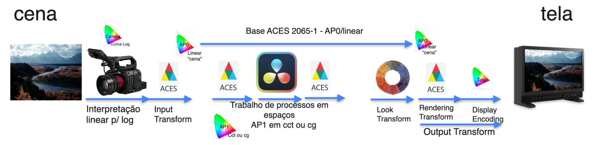
Há ainda aqui nesse fluxo as modificações criativas, chamadas de “look transform”, que apesar de respeitarem as decisões feitas em espaço intermediário (AP1/cct), eles operam num cálculo fotométrico sobre o ACES 2065-1, garantindo a validade do efeito quando for transposto a uma lógica de cena.
Testes a partir de material filmado com a Canon EOS C400
Como um primeiro teste, fui atrás de uma cena com muitas informações nas baixas luzes, porque num primeiro teste tive a impressão de ter um resultado com menos ruído nas zonas escuras. Testei as transformações via ACES 1.3, ACES 2.0, a ferramenta color space transform do Davinci Resolve (CST) e com o LUT do fabricante.

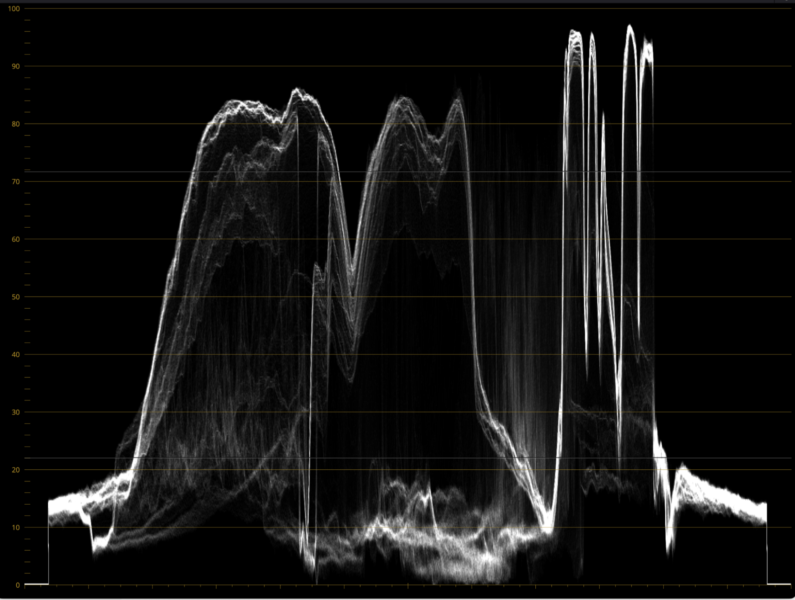


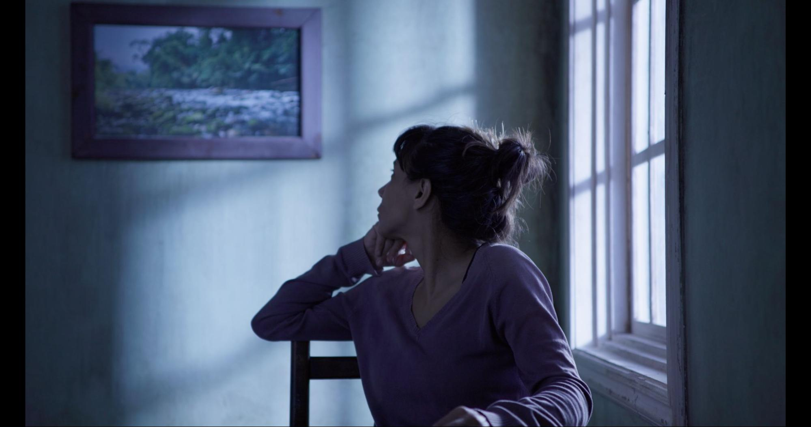
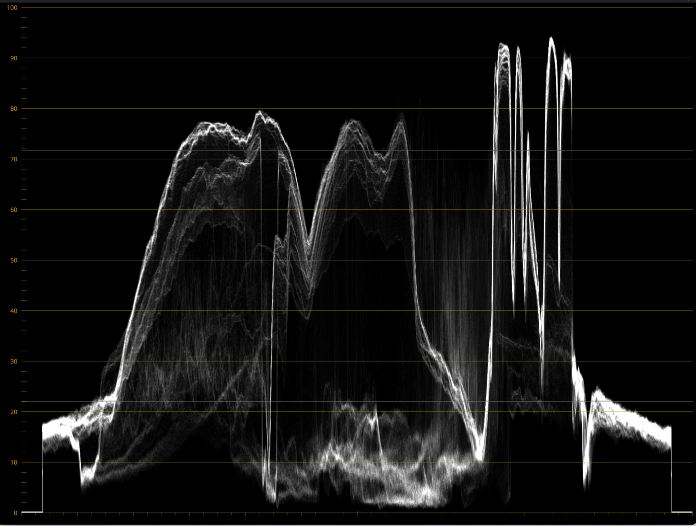
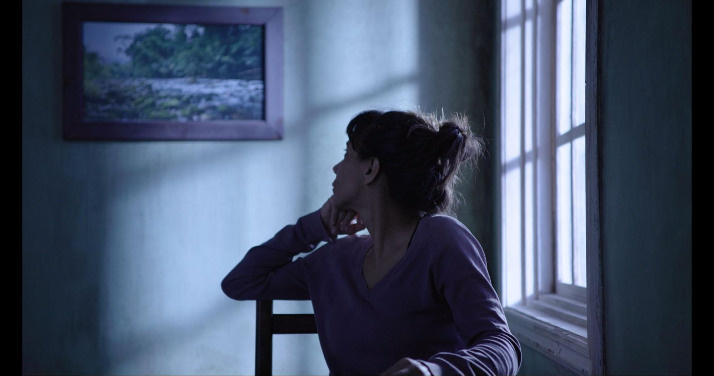

Nesse primeiro teste percebi uma semelhança nas baixas entre o ACES 2.0, o CST e o LUT da Canon. Já nas altas, as imagens variam bastante. Nos pontos mais claros da parede ao fundo o ACES 1.3 ficou 86%IRE; o CST e o LUT ficaram em 80%IRE; já o ACES 2.0 ficou em 77%IRE, ou seja a imagem menos contrastada de toda a série.
Para confirmar fui atrás de um plano ainda com bastante informação nas zonas escuras, porém com mais saturação de cores quentes e com uma referência de cinza 18% subexposta.
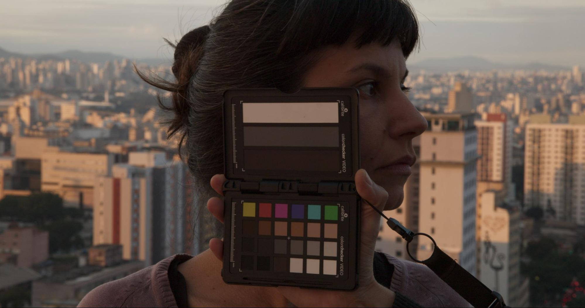
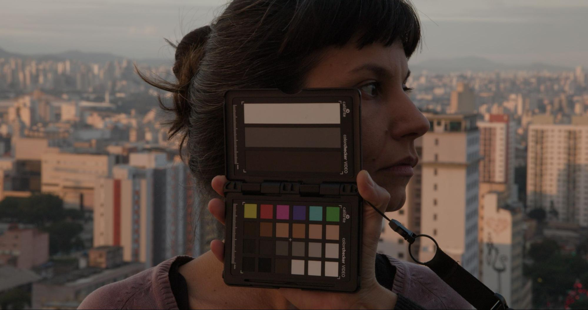
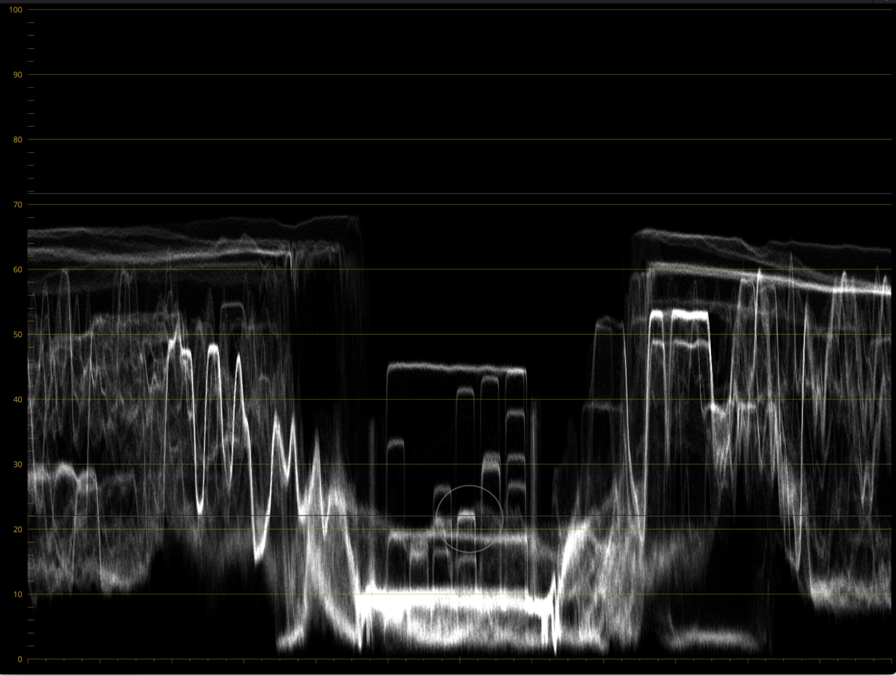
Percebemos que as baixas luzes estão mais altas no ACES 2.0, o cinza médio do cartão ficou em 21-22% IRE já no 1.3 ele ficou entre 20-21%. Já o branco do cartão cai em 48% IRE no ACES 1.3, enquanto no 2.0 ele cai em 45% IRE, ou seja, há um espaço maior entre as zonas escuras e os tons médios da imagem (que caiu na parte branca do colorchecker). Nessa comparação também notamos as cores bastante mais saturadas nos prédios, que estavam iluminados pelo sol que acabava de nascer.
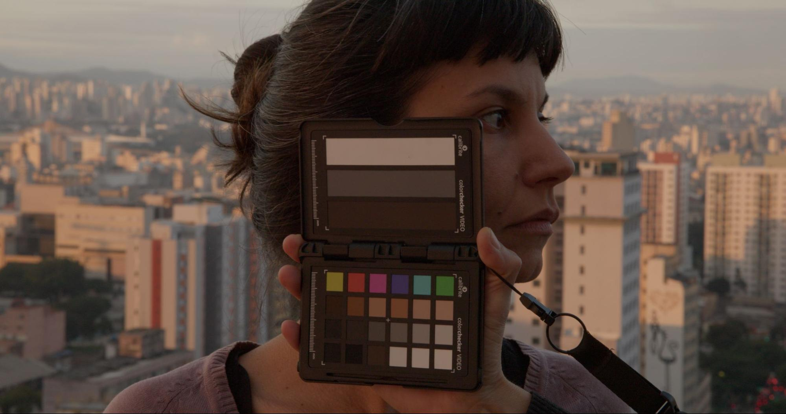
O ACES 2.0 teve as cores menos saturadas entre todas as transformações, com uma relação de contraste mais parecida com o CST e com o LUT. Tanto o CST quanto o LUT parecem exagerar na saturação, vemos a parte mais escura do cartão bastante mais saturada. Aqui o plano sem o cartão:
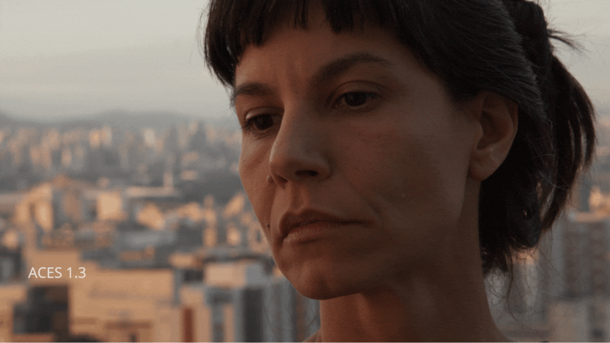
No gif animado, apesar da terrível qualidade de compactação e resolução, é possível ilustrar a diferença visual das cores entre as diferentes formas de transformação técnica da imagem.
Para analisar as cores, tomo essa referência com uma área maior de tom de pele contra um fundo do céu.

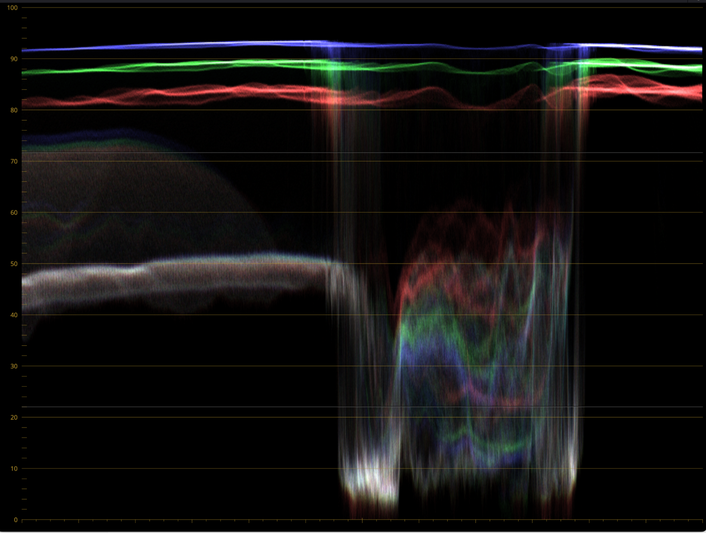


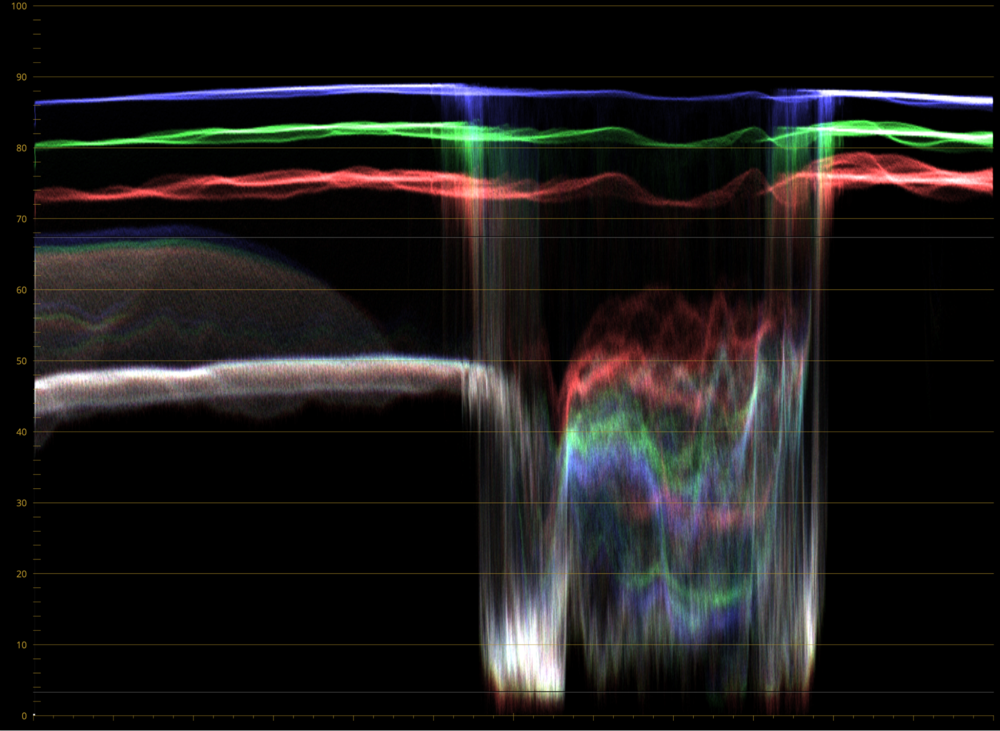


Aqui optei por uma waveform separada por canais de RGB para visualizar bem a diferença de saturação por canal de cor. Reparamos que a parede no canto inferior esquerdo das imagens está num tom neutro ali perto do 50% IRE. Visualmente já podemos notar a diferença de saturação dos tons de pele e do azul do céu (poucos instantes antes do Sol nascer). Na waveform vemos no LUT da Canon a separação maior dos canais de cor na waveform, apontando para uma maior saturação das cores. Tanto no LUT quanto no ACES 1.3 o canal de azul bate os 93% IRE, no CST 89%IRE e no ACES 2.0 87% IRE.
De forma bastante subjetiva, sem nenhuma manipulação, o ACES 2.0 me parece uma alternativa mais neutra e agradável. O Davinci Resolve CST e o LUT me parecem até com níveis de contraste bons, mas com cores exageradas, sobretudo nas baixas luzes. Já o ACES 1.3 me parece a pior resposta, com a imagem muito contrastada e tons de pele que não me convencem muito.
Peguei aqui um exemplo radical, onde a maior parte das informações importantes estão em zonas muito escuras da imagem e com fontes de luz azul saturada (nos limites do gamut), o que é, via de regra, a situação mais difícil para os sensores fotográficos. Nesse caso foi um filme que já havia sido colorizado usando um fluxo baseado em ACES 1.3 e o esforço foi o de atualizar para o ACES 2.0 mantendo a mesma intenção.
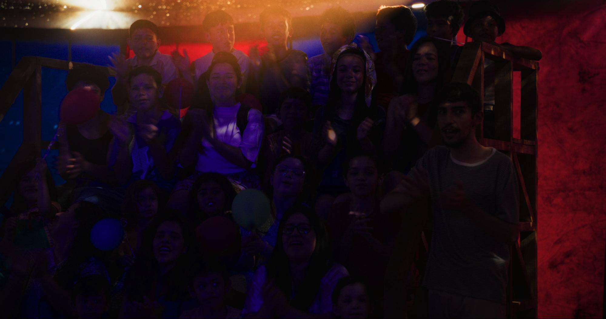

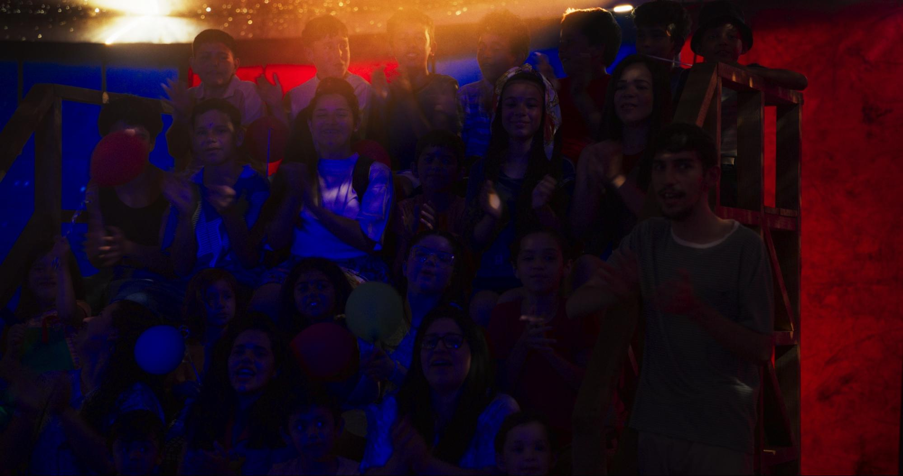
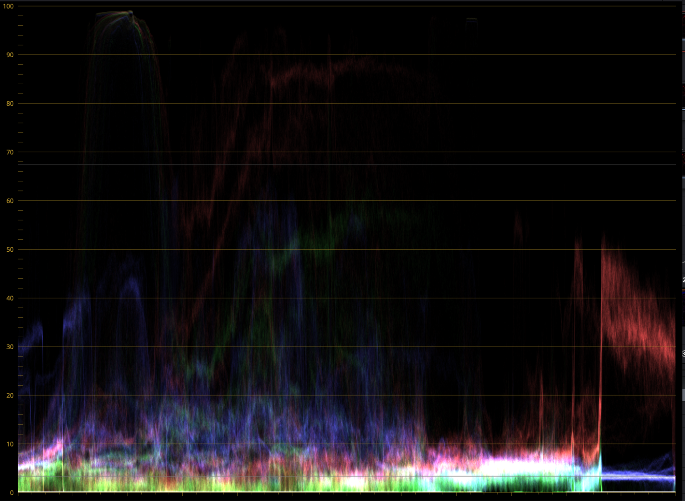
Nas duas imagens vê-se que apesar da imagem ter a maior parte da informação em zonas bastante escuras, com a transformação do ACES 2.0 essa informação está descolada do 0%IRE enquanto na versão ACES 1.3 há uma quantidade de informação enterrada. O que seria natural, já que o ACES 1.3, como já vimos joga as baixas mais pra baixo e as altas mais para o alto. Contudo, ao tentar corrigir o problema percebo que há uma quantidade de informação (provavelmente com bastante ruído) que não descola da base da waveform. Talvez exista uma forma de resolver o problema na mão de um colorista experiente, contudo, aqui a solução vem da própria transformação.


Testes de criação de transformações criativas para uso em set
Na tentativa de desenvolver uma transformação criativa (um look) para um filme, fotógrafos, coloristas e DITs têm pesquisado manipular as transformações de espaço de cor, tentando atuar de formas a ter uma resposta mais uniforme, do que os tradicionais Show LUTs, que se popularizaram na cinematografia nos últimos 15 anos. A partir dos testes com o ACES 2.0 acredito que eu tenha encontrado um caminho pra mim no trabalho com os LMTs com as transformações nativas do ACES 2.0. Relembrando que os LMTs têm sua matemática em lógica de cena (linear) e em espaço ACES AP0 somado a um novo cálculo “JMH” de Rendering Transform que separa alterações de luminância percebida, de saturação percebida e de matiz de cor percebido - perceived lightness ("J"); perceived colorfulness (“M"); perceived hue (“H”), algo análogo à lógica HSL. Isso significa que as transformações criativas devem ter uma resposta mais precisa independente da situação da luz, de escolhas de colorimetria e de exposição, tanto no que toca o processo de colorização quanto no set.
Uma das ferramentas que me interessam no processo de color grading são aquelas que trabalham com a inversão da atuação da saturação de cores aditivas para uma lógica subtrativa. Um sistema de cores subtrativo é efetivamente impossível, pois o branco nas telas é formado numa lógica aditiva (o branco é adição das cores primárias), contudo há ferramentas que simulam a forma como a saturação das cores atua no universo dos pigmentos de cor (e não da luz) e também nos filmes fotográficos (uma vez que para fazer cores positivas, os filmes usam pigmentos CMY para compor as cores, assim um azul saturado é a mistura dos pigmentos ciano e magenta, enquanto num sistema RGB (aditivo), o que fazemos é aumentar os valores de luminância do canal azul, deixando as outras como estão). A beleza da forma que o aumento da saturação de cores atua na lógica subtrativa é que ao invés de aumentar a luminância de um dos canais RGB (o azul nesse exemplo), atuam diminuindo a luminância dos outros canais (pois estaríamos agregando pigmento).
O Davinci Resolve tem uma ferramenta bastante interessante chamada Film Look Creator, que para além de tentar emular filmes (o que, via de regra, não me interessa muito particularmente) ele nos permite a emulação do aumento da saturação das cores em uma lógica subtrativa. Essa ferramenta nos permite limitá-la para que seus valores funcionem em um LUT 3D e o melhor de tudo, ela pode atuar em lógica de cena, pode acompanhar o espaço de cor da timeline ou trabalhar numa lógica linear. O teste aqui foi configurar a ferramenta para trabalhar em espaço AP0 linear e testar como o LUT .clf iria se comportar em diferentes situações de luminância e crominância (cor). Essas escolhas não seriam muito efetivas num Show LUT tradicional, ainda que fosse criado em espaço de cor intermediário (“em log”), em espaço de display muito menos.
Vejamos esses exemplos, primeiro o frame somente com a transformação de Canon log2 para Rec 709 feito através do ACES 2.0, na sequência com o LMT (.clf) criado a partir do aumento da saturação subtrativa pela ferramenta Film Look Creator e por último um segundo look com uma intervenção ainda mais agressiva pela mesma ferramenta, com a intenção de emular um efeito genérico de película:

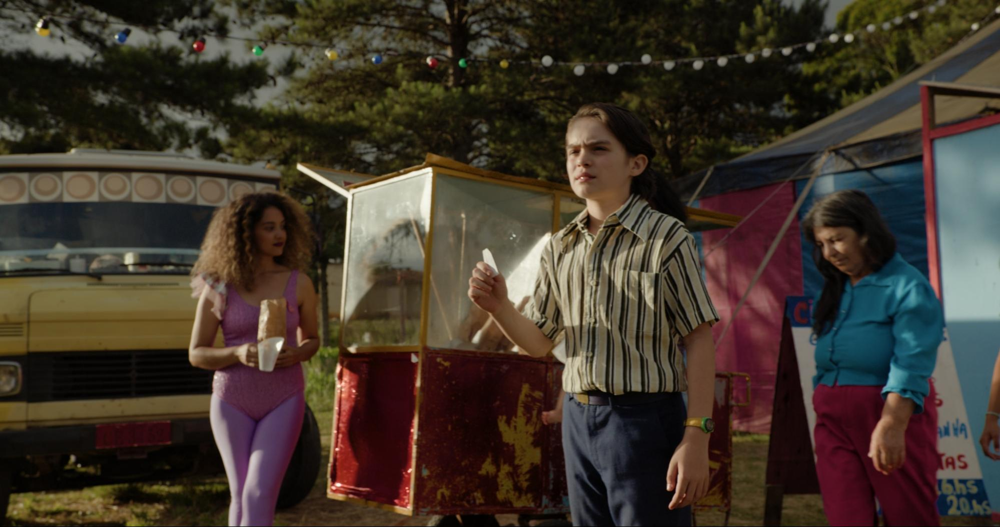

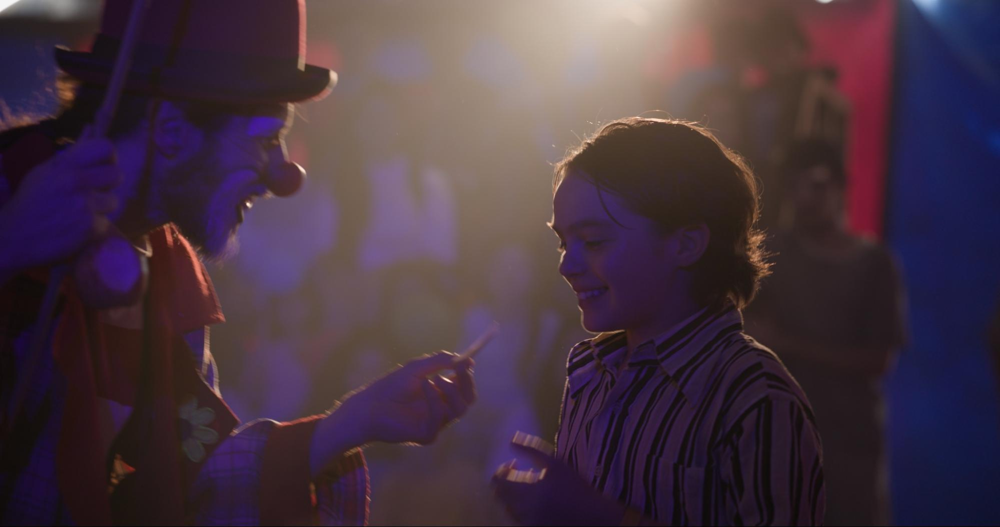


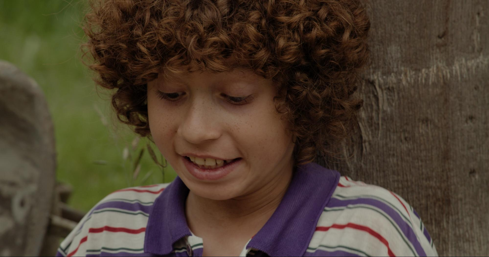
Independente do resultado ser bom ou ruim os efeitos aconteceram de maneira uniforme em situações de luz e contraste bastante diferentes. O que me anima nessa possibilidade é que há um tipo de intervenção visual na etapa de filmagem que até então era impossível na etapa de filmagem, que são ao mesmo tempo ferramentas que atuam na lógica fotométrica de cena e são mais complexas do que os ajustes lift, gama, gain. Espero ver o dia em que os fabricantes de câmera irão adotar workflow ACES nas câmeras e possibilitem assim a importação de LMTs. Por enquanto essa possibilidade no set é restrita a produções que contem com um DIT que possa implementar um fluxo ACES completo.
ACES 2.0: A Gateway to Look Creation Beyond Traditional LUTs
The initial idea for this article was quite simple: to test the new ACES 2.0 (The Academy Color Encoding System). At the same time, I was doing some work for Canon, testing and producing content for their latest cinema camera, the Canon EOS C400. So I decided to test the new ACES using images from this new camera. However, while doing so, I came across more important questions than those merely technical aspects of a color encoding system update. What emerged was a clear possibility of crafting characteristics I envision for my projects in a way that is both more experimental and more consistent, with more predictable results.
For several years, I have been working with earlier versions of ACES. This update promises to correct some issues with color rendering and should consolidate and popularize these workflows across a broader range of applications. Up to version 1.3, there was an issue for me with the direct image output from ACES: the default transform looked too contrasty and skin tones were less pleasing than other color space transforms methods. So, when workflows required me to use ACES — due to multi-camera setups, CGI elements, or various VFX processes — it always demanded me an extra research to achieve a result that I could otherwise reach faster using DaVinci Resolve's native color space transforms or even the manufacturer LUTs. Although I enjoy the look development process, it didn't always achieve uniform results like those obtained from testing lenses or filters, which consistently impart specific characteristics to the image.
Choosing a color management method, far from being a homogeneous or automatic process, affects the final image in different ways. On the path from visualizing an idea to the final image, we can run tests with the colorist, create one or more show LUTs (based on pre-researched creative intent); in productions with a DIT, we can test signal manipulations on set, and later all the work through the DI. In analog workflows, we test different negatives and photochemical processes, and once the pipeline is defined (and trusting the lab's accuracy), the final image is relatively secure — much like lens selection. In digital workflows, the "looks" created during pre-production have always seemed limited and dependent on many later adjustments. Ultimately, the safest route ends up being the manufacturer's color science, which at least ensures consistency across most photographic scenarios.
At first glance, following this logic, it would seem that the closest digital process to the analog workflow is camera choice (with its inherent color science). However, studying digital processes shows us that camera choice does not dictate image characteristics. On the contrary, with competent color management, differences between cameras relate more to practical concerns, such as ergonomics, dynamic range, exposure latitude, than to final image aesthetics. It's quite rare today for anyone to identify which camera was used on a final graded project.
I appreciate the research processes on image construction, such as Steven Yedlin's. In his widely referenced essay “On Color Science for Filmmakers”, he poses a central question:
"Can we as filmmakers identify, isolate and understand any of these underlying attributes so that we can manipulate them meaningfully for ourselves, or are we forever relegated to the status of shoppers; browsing for pre-packaged solutions and then wearing the badge of brand allegiance to the one we select.?" Yedlin, 2017 — https://www.yedlin.net/OnColorScience
He answers this himself:
"[...] the substantial part of the perceptual look comes from the mathematical preparation of the image for display and not from the camera format.
This means that if we can identify the attributes that matter to us, we can control and sculpt them precisely and individually... regardless of camera type." Yedlin, 2017 — https://www.yedlin.net/OnColorScience
His article goes on to compare attributes similar to those found in photochemical film, which interests me more for its methodological approach, where he finds ways to manipulate image attributes consistently and reliably on set — beyond Arri, RED, or Canon's default color science. When I see his tests producing radically different results from different technical transforms of the same scanned frame, I recognize a familiar digital experience: each color space transform - from camera intermediate space ("log”) to display - results in significantly different outcomes.
With ACES, beyond the flexibility to work with different equipment and processes, I am drawn to the technical possibility of working in a photometric scene-referred space. Its mathematical base operates in a linear logic (like how sensors interpret light). One problem with LUTs is that they operate as a 3D matrix in intermediate color spaces, replacing RGB values from point to point. Therefore, depending on lighting and color saturation, a show LUT developed in a specific situation may fail to reflect the intended creative look in others. Moreover, LUTs don't account for the necessary adaptations across different display technologies, in an era where many display gamuts and luminance curves coexist.
Despite these issues, until version 1.3, ACES still had shortcomings, as noted. This brings me back to what excited me about ACES 2.0: the upgraded "rendering transform," which now provides a better default starting point with lower contrast and more convincing skin tones, even without any manipulation.
For those unfamiliar with ACES, it helps to briefly outline the transformation chain from scene light to final display image in both traditional and ACES-based workflows.
Non-ACES pipeline:

- OETF (Opto-Electronic Transfer Function): Converts linear scene light into an intermediate camera space (e.g., Canon Cinema Gamut / Canon Log 2).
- EOTF (Electro-Optical Transfer Function): Converts this intermediate signal to display-referred light values, often using a LUT.
- OOTF (Opto-Optical Transfer Function): Bridges the perceptual differences between scene and a given display.
There are some issues in this workflow:
- Lacks interoperability with different cameras and VFX, CGI, virtual production or any other processes.
- Tends to apply manipulations after display transform, reducing adaptability to other display technology.
- When it applies LUTs to perform as EOTF + OOTF, it handles contrast and color in a too simple mathematical terms, limiting control.
ACES pipeline
In a very simplified way we would have:
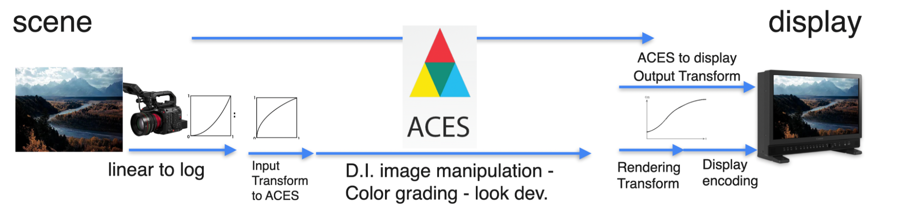
- Instead of the simple OETF (Opto-Electronic Transfer Function) — which converts linear scene values into a camera’s intermediate log encoding — the ACES workflow introduces an Input Transform. This transform maps the camera’s log signal into ACES, a linear, scene-referred color space defined by extremely broad primaries known as AP0.
- In this wide-gamut space, different components of the audiovisual pipeline can interoperate and exchange image data while preserving the original photometric intent.
- At the end of the ACES pipeline, rather than a sequential combination of OOTF (Opto-Optical Transfer Function) and EOTF (Electro-Optical Transfer Function), ACES uses a Rendering Transform followed by Display Encoding. Together, these form the Output Transform, which adapts the scene-referred signal to a perceptual model of light and encodes it into the target display’s color space. The Rendering Transform is among the most significant components in the pipeline. Unlike the simpler OETF, OOTF, or EOTF, it involves complex tone mapping operations that account for both the luminance and chromatic volume of the original scene, adjusting them to the output display at the final stage of processing.
However, this wide color space—technically designated as SMPTE ST 2065-1, also referred to as ACES 2065-1 or simply "ACES space"—encompasses a gamut larger than the visible spectrum. While it provides a high-fidelity reference for image processing, its vast scale can hinder practical color manipulation in common software tools and complicate interchange with simpler pipelines.
To address this, ACES defines a secondary working space called AP1, which is similar in size to Rec.2020. Alongside it, a working tone curve called ACEScct (comparable to a log curve) enables more intuitive image manipulation in a software like DaVinci Resolve. In VFX and CGI workflows, a variant known as ACEScg is used—based on AP1 but preserving linear luminance math.
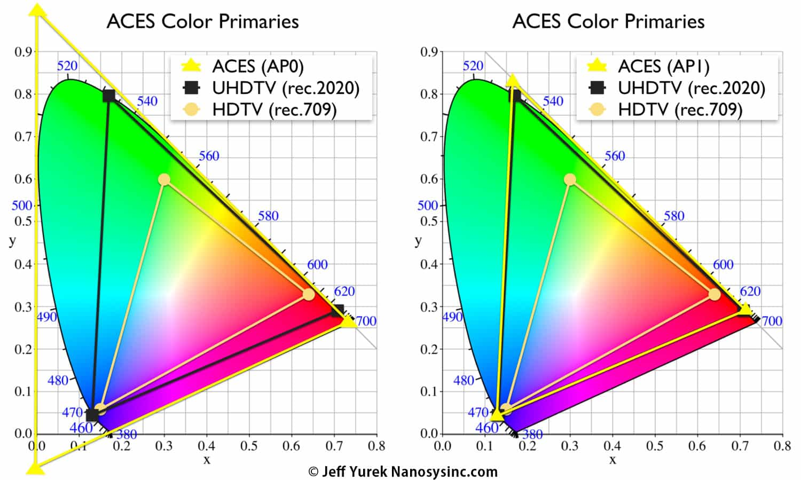
This leads us to a complete ACES workflow structure as follows:

Note that there is a possibility to create a modification called "Look Transform" that operates mathematically in AP0/linear, ensuring its validity when applied back to other situations due its scene-referred logic.
Canon EOS C400 Tests
I began by testing a scene with significant low light elements, because it seemed to me initially that ACES 2.0 had less noise in dark areas. I compared ACES 1.3, ACES 2.0, DaVinci CST, and Canon's own LUT.
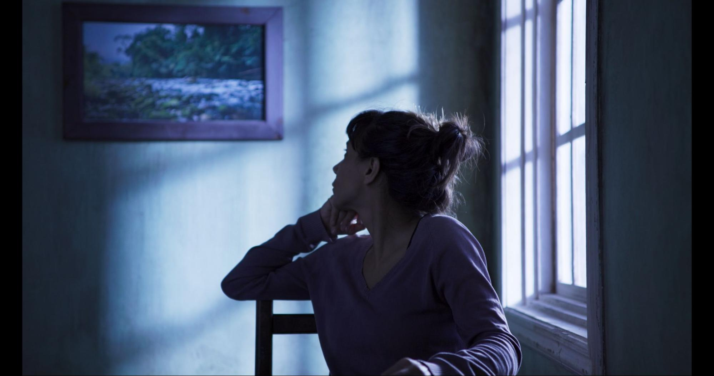

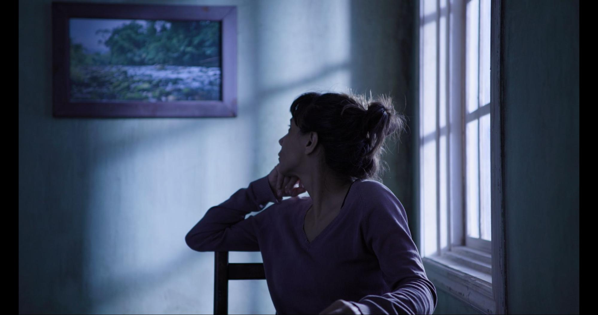


In this first test, shadows were similarly handled in ACES 2.0, CST, and Canon LUT. Highlights varied: the brightest part of a wall hit 86% IRE in ACES 1.3, 80% in CST/LUT, and 77% in ACES 2.0—the least contrasty.
In a second test, with more saturated warm tones and a slightly underexposed 18% gray reference:


ACES 2.0 lifted shadows slightly (gray card at 21-22% IRE vs. 20-21% in 1.3). The white patch was at 48% in 1.3, 45% in 2.0, increasing separation between shadow and midtones. Buildings lit by early morning sun appeared more saturated in 1.3 and CST.


Waveform analysis (RGB parade) showed:
- Canon LUT: most saturated (blue up to 93% IRE).
- ACES 2.0: least saturated (blue at 87% IRE).

Subjectively, ACES 2.0 felt more neutral and pleasing without any grade. CST and Canon LUT looked fine in contrast but oversaturated shadows. ACES 1.3 was least convincing, overly contrasty and with poor skin tones.
In a more extreme example, with deep shadows and saturated blue light (a difficult condition for sensors), I updated a project originally graded in ACES 1.3 to 2.0 with the same correction:


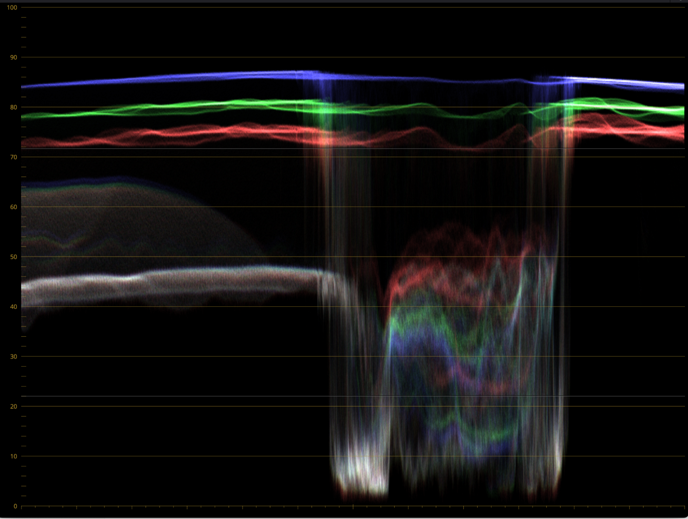


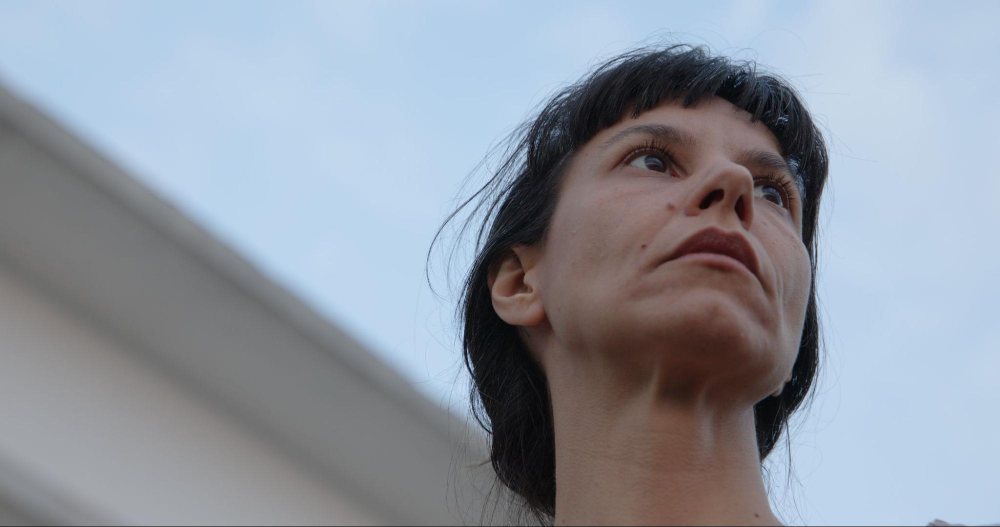

Here, I opted for an RGB parade waveform to clearly visualize the saturation differences across each color channel. Notice that the wall in the lower-left corner sits at a neutral tone right around 50% IRE. Visually, we can already see the difference in saturation in the skin tones and the blue of the sky (just moments before sunrise). On the waveform, the Canon LUT shows the widest separation between color channels, indicating higher color saturation. In both the LUT and ACES 1.3, the blue channel peaks at 93% IRE, compared to 89% IRE in the CST and 87% IRE in ACES 2.0.
Quite subjectively, with no manipulation applied, ACES 2.0 strikes me as a more neutral and pleasing alternative. The DaVinci Resolve CST and the LUT show good contrast levels, but with exaggerated colors, particularly in the shadows. ACES 1.3, on the other hand, delivers the weakest response, resulting in an overly contrasty image and unconvincing skin tones.
I chose a radical example here, where most of the critical image information sits in very dark zones alongside saturated blue light sources (at the edge of the gamut)—which is, as a rule, the most challenging scenario for photographic sensors. In this case, the film had already been graded using an ACES 1.3-based pipeline, and the goal was to update it to ACES 2.0 while preserving the original creative intent.

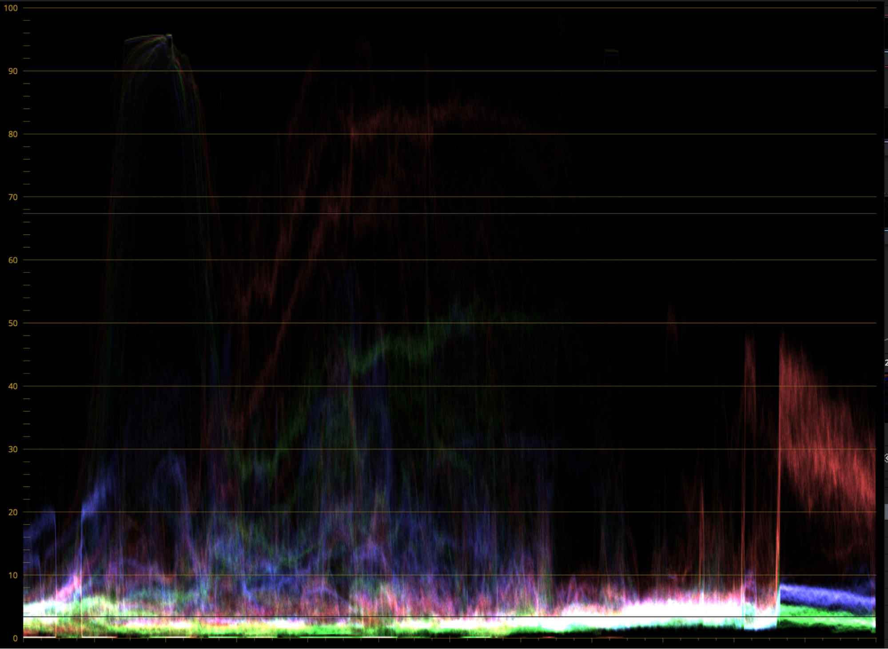


In both images, you can see that although most of the image information sits in very dark zones, the ACES 2.0 transform keeps that data lifted off the 0% IRE floor, whereas in the ACES 1.3 version, a significant amount of information is buried. This is expected, since ACES 1.3, as we have seen, pushes the shadows further down and the highlights further up. However, when trying to fix the issue, I notice that a portion of that information (likely carrying substantial noise) refuses to lift off the baseline of the waveform. While an experienced colorist might find a way to work around this manually, here the solution comes directly from the transform itself.

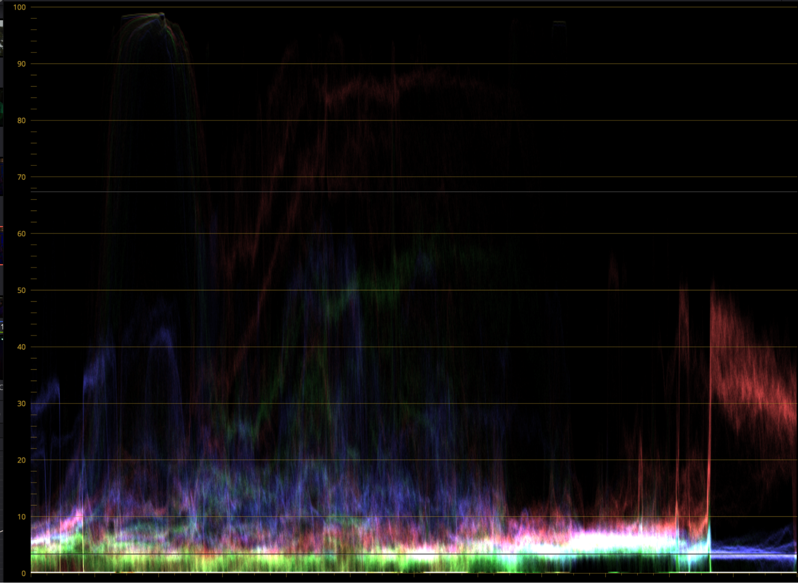
Tests on Creating Creative Transforms for On-Set Use
In an effort to develop a creative transform (a look) for a film, cinematographers, colorists, and DITs have been researching ways to manipulate color space transforms to achieve a more uniform response than traditional Show LUTs, which have become widespread in cinematography over the past 15 years. Based on tests with ACES 2.0, I believe I have found a path forward for my own work by combining LMTs with native ACES 2.0 transforms. As a reminder, LMTs operate using scene-referred (linear) math within the ACES AP0 color space, paired with a new "JMH" Rendering Transform calculation that separates adjustments of perceived lightness ("J"), perceived colorfulness ("M"), and perceived hue ("H")—somewhat analogous to HSL logic. This means creative transforms should yield a more accurate response regardless of lighting conditions, color science choices, or exposure, both during the color grading process and on set.
Among the tools that interest me in color grading are those that shift color saturation behavior from additive to subtractive logic. A true subtractive color system is effectively impossible on displays, since white on screens is formed additively (by adding the primary colors together). However, certain tools simulate how color saturation behaves in the realm of pigments (rather than light) as well as in photographic film stock—given that to produce positive colors, film uses CMY dyes to compose the image. Thus, a saturated blue is a mixture of cyan and magenta dyes, whereas in an RGB (additive) system, we increase the luminance values of the blue channel while leaving the others unchanged. The beauty of increasing color saturation under subtractive logic is that instead of boosting the luminance of a single RGB channel (blue, in this example), it lowers the luminance of the opposing channels (simulating the addition of pigment).
DaVinci Resolve features a very interesting tool called Film Look Creator. Beyond attempting to emulate specific film stocks (which, as a rule, does not particularly interest me), it allows us to emulate color saturation increases using subtractive logic. This tool can be constrained so that its values translate cleanly into a 3D LUT, and best of all, it can operate in a scene-referred pipeline, follow the timeline color space, or work in linear space. The test here consisted of configuring the tool to operate in linear AP0 space and evaluating how the resulting .clf LUT would behave across varying luminance and chrominance conditions. These choices would not be very effective in a traditional Show LUT—even if built in an intermediate ("log") color space, and far less so in display-referred space.
Let's look at these examples: first, the frame with only the transform from Canon Log 2 to Rec. 709 processed through ACES 2.0; next, with the LMT (.clf) created from the subtractive saturation boost via the Film Look Creator tool; and finally, a second look with an even more aggressive intervention using the same tool, intended to emulate a generic film stock effect:
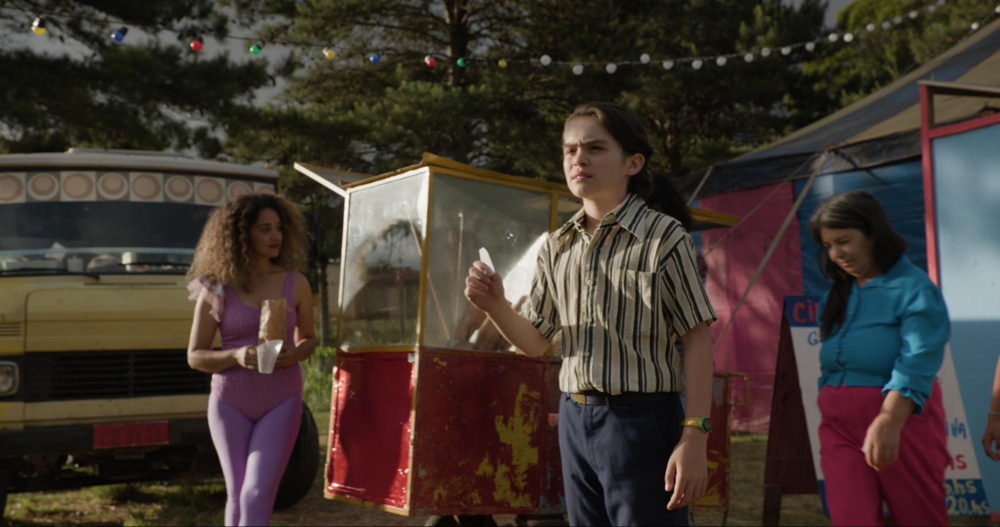

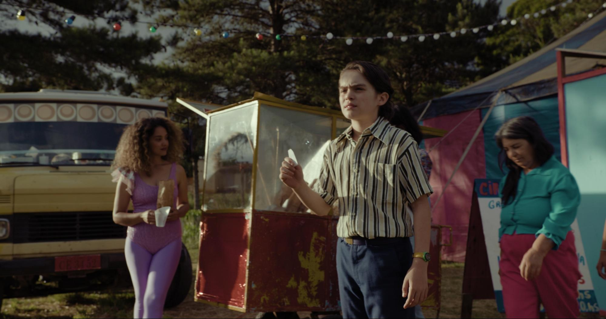

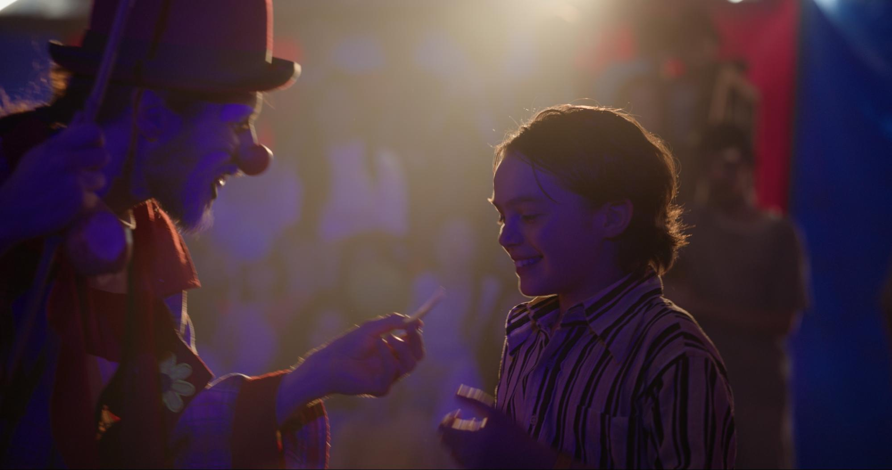


Regardless of whether the aesthetic result is good or bad, the effects behaved uniformly across vastly different lighting and contrast scenarios. What excites me about this possibility is that it unlocks a type of visual intervention during principal photography that was previously impossible on set, tools that simultaneously operate in scene-referred photometric logic and offer far greater complexity than standard lift, gamma, and gain adjustments. I look forward to the day camera manufacturers adopt native ACES workflows in-camera and allow direct LMT loading. For now, this on-set capability remains restricted to productions with a DIT who can implement a full ACES pipeline.